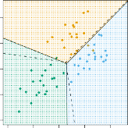

| < 4.4.1 Linear Discriminant Analysis For P 1 | 4.4.2.1 Roc Curve > |
4.4.2 Linear Discriminant Analysis for p >1
We now extend the LDA classifier to the case of multiple predictors. To do this, we will assume that $X$= ( $X_1$ , X 2 , . . . , Xp ) is drawn from a multivariate Gaussian (or multivariate normal) distribution, with a class-specific multivariate mean vector and a common covariance matrix. We begin with a brief review Gaussian of this distribution.
The multivariate Gaussian distribution assumes that each individual predictor follows a one-dimensional normal distribution, as in (4.16), with some correlation between each pair of predictors. Two examples of multivariate Gaussian distributions with p = 2 are shown in Figure 4.5. The height of the surface at any particular point represents the probability that both $X_1$ and $X_2$ fall in a small region around that point. In either panel, if the surface is cut along the $X_1$ axis or along the $X_2$ axis, the resulting cross-section will have the shape of a one-dimensional normal distribution. The left-hand panel of Figure 4.5 illustrates an example in which Var( $X_1$) = Var( $X_2$) and Cor( $X_1$ , X 2) = 0; this surface has a characteristic bell shape . However, the bell shape will be distorted if the predictors are correlated or have unequal variances, as is illustrated in the right-hand panel of Figure 4.5. In this situation, the base of the bell will have an elliptical, rather than circular, shape. To indicate that a p -dimensional random variable $X$has a multivariate Gaussian distribution, we write X ∼ N ( µ, Σ ). Here E( $X$) = µ is the mean of $X$(a vector with p components), and Cov( $X$) = Σ is the p × p covariance matrix of $X$. Formally, the multivariate Gaussian density is defined as
In the case of p > 1 predictors, the LDA classifier assumes that the observations in the $k$ th class are drawn from a multivariate Gaussian distribution N ( µk, Σ ), where µk is a class-specific mean vector, and Σ is a covariance matrix that is common to all $K$ classes. Plugging the density function for the $k$ th class, fk ( $X$= x ), into (4.15) and performing a little bit of algebra reveals that the Bayes classifier assigns an observation $X$= x
4.4 Generative Models for Classification 151

FIGURE 4.6. An example with three classes. The observations from each class are drawn from a multivariate Gaussian distribution with p = 2 , with a class-specific mean vector and a common covariance matrix. Left: Ellipses that contain 95 % of the probability for each of the three classes are shown. The dashed lines are the Bayes decision boundaries. Right: 20 observations were generated from each class, and the corresponding LDA decision boundaries are indicated using solid black lines. The Bayes decision boundaries are once again shown as dashed lines.
to the class for which
is largest. This is the vector/matrix version of (4.18).
An example is shown in the left-hand panel of Figure 4.6. Three equallysized Gaussian classes are shown with class-specific mean vectors and a common covariance matrix. The three ellipses represent regions that contain 95 % of the probability for each of the three classes. The dashed lines are the Bayes decision boundaries. In other words, they represent the set of values x for which δk ( x ) = δℓ ( x ); i.e.
for $k$ = l . (The log πk term from (4.24) has disappeared because each of the three classes has the same number of training observations; i.e. πk is the same for each class.) Note that there are three lines representing the Bayes decision boundaries because there are three pairs of classes among the three classes. That is, one Bayes decision boundary separates class 1 from class 2, one separates class 1 from class 3, and one separates class 2 from class 3. These three Bayes decision boundaries divide the predictor space into three regions. The Bayes classifier will classify an observation according to the region in which it is located.
Once again, we need to estimate the unknown parameters µ 1 , . . . , µK , π 1 , . . . , πK , and Σ ; the formulas are similar to those used in the onedimensional case, given in (4.20). To assign a new observation $X$= x , LDA plugs these estimates into (4.24) to obtain quantities δ[ˆ] $k$ ( x ), and classifies to the class for which δ[ˆ] $k$ ( x ) is largest. Note that in (4.24) δk ( x ) is a linear function of x ; that is, the LDA decision rule depends on x only
152 4. Classification
| assifcation | |||
|---|---|---|---|
| True default status No Yes Total |
|||
| Predicted default status |
No Yes |
9644 252 23 81 |
9896 104 |
| Total | 9667 333 |
10000 |
TABLE 4.4. A confusion matrix compares the LDA predictions to the true default statuses for the 10 , 000 training observations in the Default data set. Elements on the diagonal of the matrix represent individuals whose default statuses were correctly predicted, while off-diagonal elements represent individuals that were misclassified. LDA made incorrect predictions for 23 individuals who did not default and for 252 individuals who did default.
through a linear combination of its elements. As previously discussed, this is the reason for the word linear in LDA.
In the right-hand panel of Figure 4.6, 20 observations drawn from each of the three classes are displayed, and the resulting LDA decision boundaries are shown as solid black lines. Overall, the LDA decision boundaries are pretty close to the Bayes decision boundaries, shown again as dashed lines. The test error rates for the Bayes and LDA classifiers are 0 . 0746 and 0 . 0770, respectively. This indicates that LDA is performing well on this data.
We can perform LDA on the Default data in order to predict whether or not an individual will default on the basis of credit card balance and student status.[4] The LDA model fit to the 10 , 000 training samples results in a training error rate of 2 . 75 %. This sounds like a low error rate, but two caveats must be noted.
-
First of all, training error rates will usually be lower than test error rates, which are the real quantity of interest. In other words, we might expect this classifier to perform worse if we use it to predict whether or not a new set of individuals will default. The reason is that we specifically adjust the parameters of our model to do well on the training data. The higher the ratio of parameters p to number of samples n , the more we expect this overfitting to play a role. For these data we don’t expect this to be a problem, since p = 2 and overfitting n = 10 , 000.
-
Second, since only 3 . 33 % of the individuals in the training sample defaulted, a simple but useless classifier that always predicts that an individual will not default, regardless of his or her credit card balance and student status, will result in an error rate of 3 . 33 %. In other words, the trivial null classifier will achieve an error rate that null is only a bit higher than the LDA training set error rate.
In practice, a binary classifier such as this one can make two types of errors: it can incorrectly assign an individual who defaults to the no default category, or it can incorrectly assign an individual who does not default to
4The careful reader will notice that student status is qualitative — thus, the normality assumption made by LDA is clearly violated in this example! However, LDA is often remarkably robust to model violations, as this example shows. Naive Bayes, discussed in Section 4.4.4, provides an alternative to LDA that does not assume normally distributed predictors.
4.4 Generative Models for Classification 153
the default category. It is often of interest to determine which of these two types of errors are being made. A confusion matrix , shown for the Default confusion data in Table 4.4, is a convenient way to display this information. The matrix table reveals that LDA predicted that a total of 104 people would default. Of these people, 81 actually defaulted and 23 did not. Hence only 23 out of 9 , 667 of the individuals who did not default were incorrectly labeled. This looks like a pretty low error rate! However, of the 333 individuals who defaulted, 252 (or 75 . 7 %) were missed by LDA. So while the overall error rate is low, the error rate among individuals who defaulted is very high. From the perspective of a credit card company that is trying to identify high-risk individuals, an error rate of 252 / 333 = 75 . 7 % among individuals who default may well be unacceptable.
Class-specific performance is also important in medicine and biology, where the terms sensitivity and specificity characterize the performance of sensitivity a classifier or screening test. In this case the sensitivity is the percentspecificity age of true defaulters that are identified; it equals 24.3 %. The specificity is the percentage of non-defaulters that are correctly identified; it equals (1 − 23 / 9667) = 99 . 8 %.
Why does LDA do such a poor job of classifying the customers who default? In other words, why does it have such low sensitivity? As we have seen, LDA is trying to approximate the Bayes classifier, which has the lowest total error rate out of all classifiers. That is, the Bayes classifier will yield the smallest possible total number of misclassified observations, regardless of the class from which the errors stem. Some misclassifications will result from incorrectly assigning a customer who does not default to the default class, and others will result from incorrectly assigning a customer who defaults to the non-default class. In contrast, a credit card company might particularly wish to avoid incorrectly classifying an individual who will default, whereas incorrectly classifying an individual who will not default, though still to be avoided, is less problematic. We will now see that it is possible to modify LDA in order to develop a classifier that better meets the credit card company’s needs.
The Bayes classifier works by assigning an observation to the class for which the posterior probability pk ( $X$) is greatest. In the two-class case, this amounts to assigning an observation to the default class if
Thus, the Bayes classifier, and by extension LDA, uses a threshold of 50 % for the posterior probability of default in order to assign an observation to the default class. However, if we are concerned about incorrectly predicting the default status for individuals who default, then we can consider lowering this threshold. For instance, we might label any customer with a posterior probability of default above 20 % to the default class. In other words, instead of assigning an observation to the default class if (4.26) holds, we could instead assign an observation to this class if
The error rates that result from taking this approach are shown in Table 4.5. Now LDA predicts that 430 individuals will default. Of the 333 individuals who default, LDA correctly predicts all but 138, or 41 . 4 %. This is a vast
- Classification
154
| assifcation | |||
|---|---|---|---|
| True default status No Yes Total |
|||
| Predicted default status |
No Yes |
9432 138 235 195 |
9570 430 |
| Total | 9667 333 |
10000 |
TABLE 4.5. A confusion matrix compares the LDA predictions to the true default statuses for the 10 , 000 training observations in the Default data set, using a modified threshold value that predicts default for any individuals whose posterior default probability exceeds 20 %.

FIGURE 4.7. For the Default data set, error rates are shown as a function of the threshold value for the posterior probability that is used to perform the assignment. The black solid line displays the overall error rate. The blue dashed line represents the fraction of defaulting customers that are incorrectly classified, and the orange dotted line indicates the fraction of errors among the non-defaulting customers.
improvement over the error rate of 75 . 7 % that resulted from using the threshold of 50 %. However, this improvement comes at a cost: now 235 individuals who do not default are incorrectly classified. As a result, the overall error rate has increased slightly to 3 . 73 %. But a credit card company may consider this slight increase in the total error rate to be a small price to pay for more accurate identification of individuals who do indeed default.
Figure 4.7 illustrates the trade-off that results from modifying the threshold value for the posterior probability of default. Various error rates are shown as a function of the threshold value. Using a threshold of 0 . 5, as in (4.26), minimizes the overall error rate, shown as a black solid line. This is to be expected, since the Bayes classifier uses a threshold of 0 . 5 and is known to have the lowest overall error rate. But when a threshold of 0 . 5 is used, the error rate among the individuals who default is quite high (blue dashed line). As the threshold is reduced, the error rate among individuals who default decreases steadily, but the error rate among the individuals who do not default increases. How can we decide which threshold value is best? Such a decision must be based on domain knowledge , such as detailed information about the costs associated with default.
The ROC curve is a popular graphic for simultaneously displaying the ROC curve two types of errors for all possible thresholds. The name “ROC” is historic, and comes from communications theory. It is an acronym for receiver operating characteristics . Figure 4.8 displays the ROC curve for the LDA classifier on the training data. The overall performance of a classifier, sum-
4.4 Generative Models for Classification 155
Sub-Chapters
| < 4.4.1 Linear Discriminant Analysis For P 1 | 4.4.2.1 Roc Curve > |